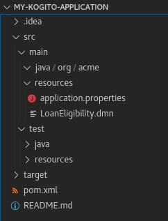
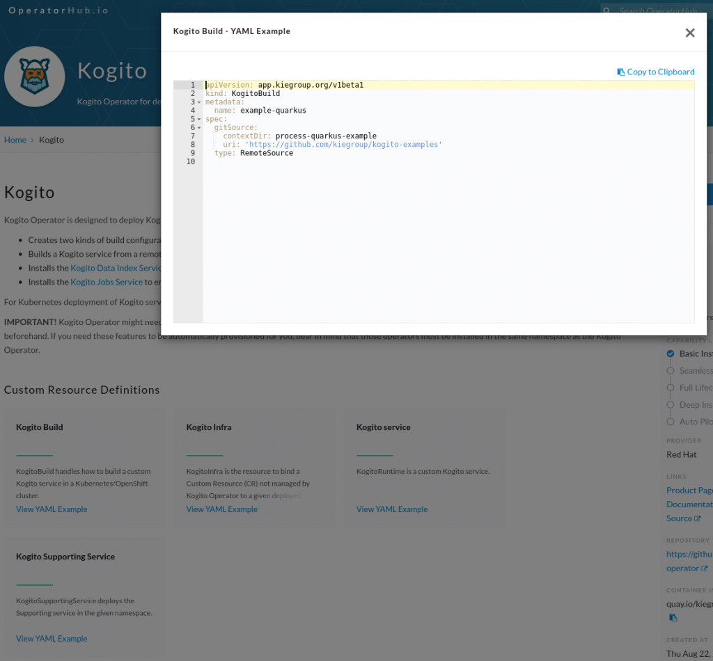

How to integrate your Kogito application with TrustyAI – Part 1
How can you audit a decision out of your new Kogito application? It’s pretty simple: in this series of articles, we are going to demonstrate how to create a new Kogito application and how to deploy the TrustyAI infrastructure on an OpenShift cluster.
If you are new to TrustyAI, we suggest you read this introduction: https://blog.kie.org/2020/06/trusty-ai-introduction.html
With the additional capabilities of TrustyAI, you will get a nice overview of all the decisions that have been taken by the Kogito application, as well as a representation of why the model took those decisions (i.e. the explanation of the decisions).
At the moment, TrustyAI provides via Audit UI two main features:
1) The complete list of all the executions of the DMN models in the Kogito application.
2) The details of each execution, including all the inputs, all the internal outcomes and their explainability.

In order to achieve this goal, we’ll go through these three steps:
1) Create the Kogito application, enable the so-called tracing addon and create the docker image (the subject of the current blogpost).
2) Prepare your OpenShift cluster.
3) Deploy the infrastructure.
Let’s go into the details of the first step!
Create the kogito application and enable the tracing addon
Let’s assume you have already created your DMN model that contains your business logic using your preferred channel (http://dmn.new/ for instance).
For the sake of the demo, we will use the following DMN model: https://raw.githubusercontent.com/kiegroup/kogito-examples/main/kogito-quarkus-examples/dmn-tracing-quarkus/src/main/resources/LoanEligibility.dmn.
You can create a new Kogito application using maven:
mvn archetype:generate \
-DarchetypeGroupId=org.kie.kogito \
-DarchetypeArtifactId=kogito-quarkus-archetype \
-DgroupId=com.redhat.developer -DartifactId=my-kogito-application \
-DarchetypeVersion=1.0.0.Final \
-Dversion=1.0-SNAPSHOTAnd then put your DMN model under the folder my-kogito-application/src/main/resources (and delete the default BPMN resource). The project structure should look like the following:

The Kogito tracing addon is needed to export the necessary information about the decisions taken by the model. Modify the pom.xml file to import the following dependency:
<dependency>
<groupId>org.kie.kogito</groupId>
<artifactId>tracing-decision-quarkus-addon</artifactId>
</dependency>The last thing to do is to configure the tracing addon: add the following lines to the file my-kogito-application/src/main/resources/application.properties .
# Kafka Tracing
mp.messaging.outgoing.kogito-tracing-decision.group.id=kogito-runtimes
mp.messaging.outgoing.kogito-tracing-decision.connector=smallrye-kafka
mp.messaging.outgoing.kogito-tracing-decision.topic=kogito-tracing-decision
mp.messaging.outgoing.kogito-tracing-decision.value.serializer=org.apache.kafka.common.serialization.StringSerializer
# Kafka Tracing Model
mp.messaging.outgoing.kogito-tracing-model.group.id=kogito-runtimes
mp.messaging.outgoing.kogito-tracing-model.connector=smallrye-kafka
mp.messaging.outgoing.kogito-tracing-model.topic=kogito-tracing-model
mp.messaging.outgoing.kogito-tracing-model.value.serializer=org.apache.kafka.common.serialization.StringSerializerFor a more detailed overview on the tracing addon, a dedicated blogpost is available here: https://blog.kie.org/2020/11/trustyai-meets-kogito-the-decision-tracing-addon.html .
You can use the Kogito operator if you are running on OpenShift to automatically execute the build using the custom resource KogitoBuild.

As an alternative approach in this demo we are going to deploy it using the KogitoService one: this custom resource deploys a Kogito application from a docker image on a remote hub. Let’s create a docker image from our project then!
Create the jar application with
mvn clean package -DskipTestsAnd then use the following Dockerfile to build a new docker image
FROM quay.io/kiegroup/kogito-quarkus-jvm-ubi8:latest
COPY target/*-runner.jar $KOGITO_HOME/bin
COPY target/lib $KOGITO_HOME/bin/libAssuming you have an account on docker hub (https://hub.docker.com/), build your image with
docker build --tag <your_username>/my-kogito-application:1.0 .And then push it to the hub
docker push <your_username>/my-kogito-application:1.0The second part is here https://blog.kie.org/2020/12/how-to-integrate-your-kogito-application-with-trustyai-part-2.html